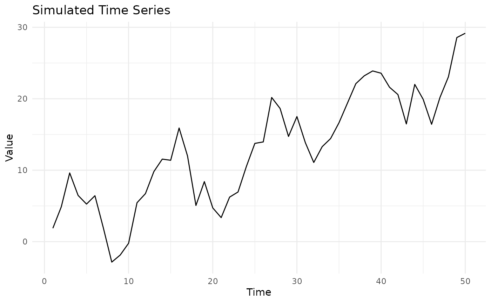
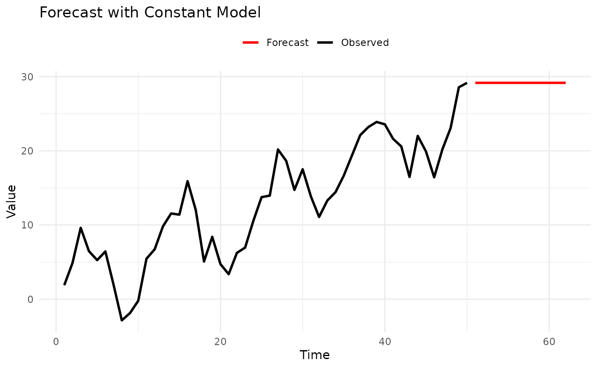
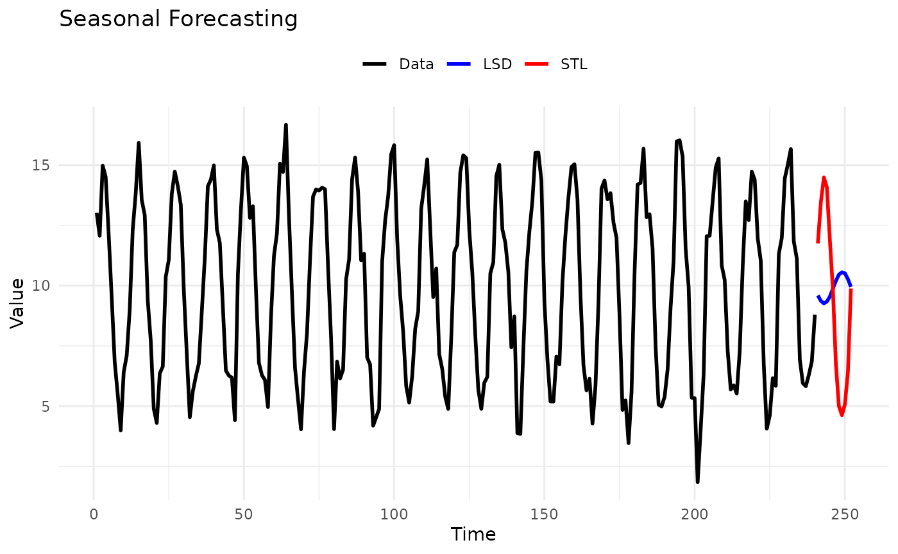

vignettes/forecastbaselines.Rmd
forecastbaselines.Rmdforecastbaselines provides an R interface to the ForecastBaselines.jl Julia package, giving you access to 10 baseline forecasting models with comprehensive uncertainty quantification and evaluation tools.
This vignette will walk you through:
You’ll need both Julia and R installed:
Julia (>= 1.9)
julia --version
R (>= 3.5.0)
# Install from GitHub
# install.packages("remotes")
remotes::install_github("epiforecasts/forecastbaselines")The first time you use the package, you need to set up the Julia backend:
library(forecastbaselines)
#> Julia version 1.11.7 at location /opt/hostedtoolcache/julia/1.11.7/x64/bin will be used.
#> Loading setup script for JuliaCall...
#> Finish loading setup script for JuliaCall.
#> forecastbaselines: Julia backend loaded successfully
library(scoringutils)
library(ggplot2)
# One-time setup: installs Julia packages
setup_ForecastBaselines()
#> Initializing Julia...
#> Julia initialized successfully
#> Checking ForecastBaselines.jl installation...
#> ForecastBaselines.jl is already installed
#> Loading R conversion helpers...
#> forecastbaselines setup complete!This will:
Note: This only needs to be done once. Subsequent R sessions will automatically connect to Julia.
Let’s create a simple forecast using the Constant (naive) model, which uses the last observed value as the forecast.
# Simulate a time series with trend and noise
set.seed(123)
n <- 50
time <- 1:n
trend <- 0.5 * time
seasonal <- 5 * sin(2 * pi * time / 12)
noise <- rnorm(n, sd = 2)
data <- trend + seasonal + noise
# Plot the data
ggplot(data.frame(time = 1:n, value = data), aes(x = time, y = value)) +
geom_line() +
labs(title = "Simulated Time Series", x = "Time", y = "Value") +
theme_minimal()
# Create a Constant (naive) model
model <- ConstantModel()
# Fit the model to the data
fitted <- fit_baseline(data, model)
# Forecast 12 steps ahead
horizon <- 1:12
fc <- forecast(fitted,
interval_method = NoInterval(),
horizon = horizon
)
# View the forecast
print(fc)
#> ForecastBaselines Forecast Object
#> ==================================
#>
#> Horizon: 1 to 12
#>
#> Components:
#> - Mean forecasts
#> - Median forecasts
# Access forecast values
fc$mean
#> [1] 29.16339 29.16339 29.16339 29.16339 29.16339 29.16339 29.16339 29.16339
#> [9] 29.16339 29.16339 29.16339 29.16339
# Plot data and forecast
plot_df <- rbind(
data.frame(time = 1:n, value = data, type = "Observed"),
data.frame(time = (n + 1):(n + 12), value = fc$mean, type = "Forecast")
)
ggplot(plot_df, aes(x = time, y = value, color = type)) +
geom_line(linewidth = 1) +
scale_color_manual(values = c("Observed" = "black", "Forecast" = "red")) +
labs(title = "Forecast with Constant Model", x = "Time", y = "Value", color = NULL) +
theme_minimal() +
theme(legend.position = "top")
Most real-world forecasts need uncertainty quantification. Let’s add prediction intervals.
The empirical method generates prediction intervals by bootstrapping from residuals:
# Forecast with prediction intervals
fc_with_intervals <- forecast(
fitted,
interval_method = EmpiricalInterval(
n_trajectories = 1000,
seed = 42
),
horizon = 1:12,
levels = c(0.50, 0.95),
model_name = "Constant"
)
# Add truth for visualization
truth_vals <- c(105, 110, 108, 112, 115, 118, 120, 122, 125, 128, 130, 132)
fc_intervals_truth <- add_truth(fc_with_intervals, truth_vals)
# Convert to scoringutils format and visualize
fc_quantile <- scoringutils::as_forecast_quantile(fc_intervals_truth)
# Show quantile forecast structure
print(head(fc_quantile, 15))
#> observed predicted quantile_level horizon model
#> <num> <num> <num> <int> <char>
#> 1: 105 24.38131 0.025 1 Constant
#> 2: 105 27.20479 0.250 1 Constant
#> 3: 105 30.26186 0.500 1 Constant
#> 4: 105 32.15411 0.750 1 Constant
#> 5: 105 35.38222 0.975 1 Constant
#> 6: 110 24.38131 0.025 2 Constant
#> 7: 110 27.20479 0.250 2 Constant
#> 8: 110 30.26186 0.500 2 Constant
#> 9: 110 32.03585 0.750 2 Constant
#> 10: 110 34.83300 0.975 2 Constant
#> 11: 108 24.38131 0.025 3 Constant
#> 12: 108 27.20479 0.250 3 Constant
#> 13: 108 30.14993 0.500 3 Constant
#> 14: 108 32.03585 0.750 3 Constant
#> 15: 108 35.38222 0.975 3 ConstantLet’s use an ARMA model for better forecasting:
# Create ARMA(2,1) model
arma_model <- ARMAModel(p = 2, q = 1)
# Fit and forecast with prediction intervals
arma_fitted <- fit_baseline(data, arma_model)
arma_fc <- forecast(
arma_fitted,
interval_method = EmpiricalInterval(n_trajectories = 1000),
horizon = 1:12,
levels = c(0.5, 0.95),
model_name = "ARMA(2,1)"
)
# Add truth and visualize with prediction intervals
truth <- c(105, 110, 108, 112, 115, 118, 120, 122, 125, 128, 130, 132)
arma_with_truth <- add_truth(arma_fc, truth)
# Convert to scoringutils format and plot with intervals
arma_quantile <- scoringutils::as_forecast_quantile(arma_with_truth)
# Show quantile forecast structure
print(head(arma_quantile, 15))
#> observed predicted quantile_level horizon model
#> <num> <num> <num> <int> <char>
#> 1: 105 24.11342 0.025 1 ARMA(2,1)
#> 2: 105 27.34783 0.250 1 ARMA(2,1)
#> 3: 105 30.04265 0.500 1 ARMA(2,1)
#> 4: 105 32.05047 0.750 1 ARMA(2,1)
#> 5: 105 36.69127 0.975 1 ARMA(2,1)
#> 6: 110 24.31123 0.025 2 ARMA(2,1)
#> 7: 110 27.52486 0.250 2 ARMA(2,1)
#> 8: 110 30.12102 0.500 2 ARMA(2,1)
#> 9: 110 32.19094 0.750 2 ARMA(2,1)
#> 10: 110 36.88908 0.975 2 ARMA(2,1)
#> 11: 108 24.17632 0.025 3 ARMA(2,1)
#> 12: 108 27.38995 0.250 3 ARMA(2,1)
#> 13: 108 30.04582 0.500 3 ARMA(2,1)
#> 14: 108 32.11336 0.750 3 ARMA(2,1)
#> 15: 108 36.75417 0.975 3 ARMA(2,1)To evaluate forecast accuracy, you need to provide the true values.
# Generate some "future" observations
set.seed(456)
future_time <- (n + 1):(n + 12)
future_trend <- 0.5 * future_time
future_seasonal <- 5 * sin(2 * pi * future_time / 12)
truth <- future_trend + future_seasonal + rnorm(12, sd = 2)
# Add truth to forecast
fc_with_truth <- forecast(
fitted,
interval_method = NoInterval(),
horizon = 1:12,
truth = truth,
model_name = "Constant"
)
# Calculate scoring metrics using scoringutils
fc_point <- scoringutils::as_forecast_point(fc_with_truth)
scores <- scoringutils::score(fc_point)
scores_summary <- scoringutils::summarise_scores(scores, by = "model")
print(scores_summary)
#> model ae_point se_point ape
#> <char> <num> <num> <num>
#> 1: Constant 3.589517 18.55037 0.1312766
# Access specific metrics
cat("Mean Absolute Error:", scores_summary$ae_point, "\n")
#> Mean Absolute Error: 3.589517
cat("Root Mean Squared Error:", sqrt(scores_summary$se_point), "\n")
#> Root Mean Squared Error: 4.307014
cat("Absolute Percentage Error:", scores_summary$ape, "\n")
#> Absolute Percentage Error: 0.1312766Note: This package is compatible with the scoringutils package, providing standardized and comprehensive forecast evaluation through S3 methods.
Convert forecasts using
scoringutils::as_forecast_point() or
scoringutils::as_forecast_quantile(), then score:
# Convert forecast to scoringutils format
fc_point <- scoringutils::as_forecast_point(forecast)
# Score the forecast
scores <- scoringutils::score(fc_point)
# Get summarised scores
scores_summary <- scoringutils::summarise_scores(scores, by = "model")
# Access metrics from summary
mae <- scores_summary$ae_point # Mean Absolute Error
mse <- scores_summary$se_point # Mean Squared Error
rmse <- sqrt(scores_summary$se_point) # Root Mean Squared Error
ape <- scores_summary$ape # Absolute Percentage Error
# For quantile forecasts
wis <- scores_summary$wis # Weighted Interval Score
bias <- scores_summary$bias # Forecast bias
coverage_50 <- scores_summary$interval_coverage_50 # 50% interval coverage
coverage_90 <- scores_summary$interval_coverage_90 # 90% interval coverageSee the scoringutils documentation for all available metrics and functions.
# Create multiple models
models <- list(
Constant = ConstantModel(),
ARMA = ARMAModel(p = 1, q = 1),
Marginal = MarginalModel()
)
# Fit and score each model
results <- lapply(names(models), function(name) {
fitted <- fit_baseline(data, models[[name]])
fc <- forecast(fitted,
interval_method = NoInterval(),
horizon = 1:12,
truth = truth,
model_name = name
)
fc_point <- scoringutils::as_forecast_point(fc)
fc_scores <- scoringutils::score(fc_point)
fc_summary <- scoringutils::summarise_scores(fc_scores, by = "model")
data.frame(
Model = name,
MAE = fc_summary$ae_point,
RMSE = sqrt(fc_summary$se_point),
APE = fc_summary$ape
)
})
# Combine and display
comparison <- do.call(rbind, results)
print(comparison)
#> Model MAE RMSE APE
#> 1 Constant 3.589517 4.307014 0.1312766
#> 2 ARMA 3.591904 4.309759 0.1314230
#> 3 Marginal 15.389404 15.959764 0.5332016
# Find best model by MAE
best_model <- comparison$Model[which.min(comparison$MAE)]
cat("\nBest model by MAE:", best_model, "\n")
#>
#> Best model by MAE: ConstantFor data with strong seasonal patterns, use seasonal models:
# Generate seasonal data (monthly, s=12)
set.seed(789)
seasonal_data <- 10 + 5 * sin(2 * pi * (1:240) / 12) + rnorm(240)
# STL decomposition model
stl_model <- STLModel(s = 12)
stl_fitted <- fit_baseline(seasonal_data, stl_model)
stl_fc <- forecast(stl_fitted,
interval_method = NoInterval(),
horizon = 1:12
)
# Last Similar Dates model
lsd_model <- LSDModel(window_width = 10, s = 12)
lsd_fitted <- fit_baseline(seasonal_data, lsd_model)
lsd_fc <- forecast(lsd_fitted,
interval_method = NoInterval(),
horizon = 1:12
)
# Compare
n_seasonal <- length(seasonal_data)
plot_df <- rbind(
data.frame(time = 1:n_seasonal, value = seasonal_data, type = "Data"),
data.frame(time = (n_seasonal + 1):(n_seasonal + 12), value = stl_fc$mean, type = "STL"),
data.frame(time = (n_seasonal + 1):(n_seasonal + 12), value = lsd_fc$mean, type = "LSD")
)
ggplot(plot_df, aes(x = time, y = value, color = type)) +
geom_line(linewidth = 1) +
scale_color_manual(values = c("Data" = "black", "STL" = "red", "LSD" = "blue")) +
labs(title = "Seasonal Forecasting", x = "Time", y = "Value", color = NULL) +
theme_minimal() +
theme(legend.position = "top")
For data with non-constant variance or non-negativity constraints, use transformations.
# Example: exponential growth (log transform stabilizes variance)
data_exp <- exp(rnorm(50, mean = 2, sd = 0.3))
# 1. Transform data
log_data <- log(data_exp)
# 2. Fit model on transformed scale
model <- ConstantModel()
fitted <- fit_baseline(log_data, model)
# 3. Forecast on transformed scale
fc <- forecast(fitted,
interval_method = NoInterval(),
horizon = 1:12
)
# 4. Back-transform to original scale
fc$mean <- exp(fc$mean)
# Now fc$mean is in the original scale
print(fc$mean)
#> [1] 10.31625 10.31625 10.31625 10.31625 10.31625 10.31625 10.31625 10.31625
#> [9] 10.31625 10.31625 10.31625 10.31625See vignette("transformations") for detailed guidance on
transformations.
forecastbaselines provides helpful utilities for working with forecast objects:
# Check what components are available
has_mean(fc) # TRUE
#> [1] TRUE
has_median(fc) # FALSE (not requested)
#> [1] TRUE
has_truth(fc) # FALSE (not provided)
#> [1] FALSE
# Add components
median_vals <- fc$mean # For demo, use mean as median
fc_with_median <- add_median(fc, median_vals)
has_median(fc_with_median) # TRUE
#> [1] TRUE
# Add truth values for scoring
fc_with_truth <- add_truth(fc, truth)
has_truth(fc_with_truth) # TRUE
#> [1] TRUE
# Filter/subset forecasts
fc_short <- truncate_horizon(fc, max_h = 5)
fc_selected <- filter_horizons(fc, horizons = c(1, 3, 6, 12))Now that you’ve learned the basics, explore:
vignette("forecast-models") - Detailed guide to all
10 models, when to use each, and their parameters
vignette("transformations") - Comprehensive guide to
data transformations with examples
Package documentation - Run ?forecastbaselines or
help(package = "forecastbaselines")
Examples - Check the examples/ directory in the
package for complete workflows
# 1. Setup (once)
setup_ForecastBaselines()
# 2. Create model
model <- ARMAModel(p = 2, q = 1)
# 3. Fit to data
fitted <- fit_baseline(data, model)
# 4. Generate forecasts
fc <- forecast(fitted,
interval_method = EmpiricalInterval(n_trajectories = 1000),
horizon = 1:12,
levels = 0.95,
truth = truth_values,
model_name = "ARMA(2,1)"
)
# 5. Score forecasts
fc_point <- scoringutils::as_forecast_point(fc)
scores <- scoringutils::score(fc_point)
scores_summary <- scoringutils::summarise_scores(scores, by = "model")
mae <- scores_summary$ae_point
# Simple
ConstantModel() # Naive forecast
MarginalModel() # Sample from marginal distribution
# Seasonal
STLModel(s = 12) # Monthly seasonality
LSDModel(window_width = 10, s = 12) # Last similar dates
# Time Series
ARMAModel(p = 2, q = 1) # ARMA
ETSModel() # Exponential smoothingJulia not found:
# Specify Julia path manually
Sys.setenv(JULIA_HOME = "/path/to/julia/bin")
setup_ForecastBaselines()Package not loading:
# Check if Julia is set up
is_setup() # Should return TRUE
# Re-run setup if needed
setup_ForecastBaselines()Getting errors during forecasting:
# Check your data
summary(data) # No NAs or infinite values?
length(data) # Enough observations?
# Check model parameters
# e.g., ARMA needs p + q < length(data)For more help, see the GitHub Issues.